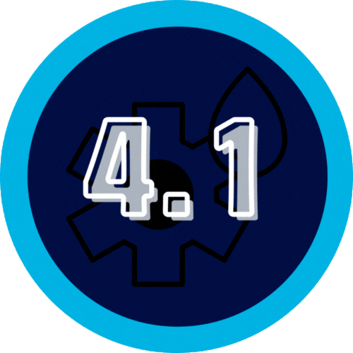
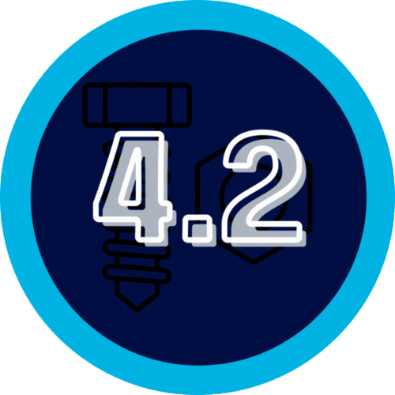
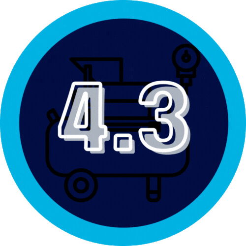
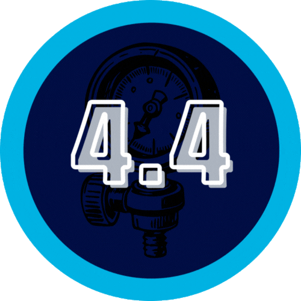
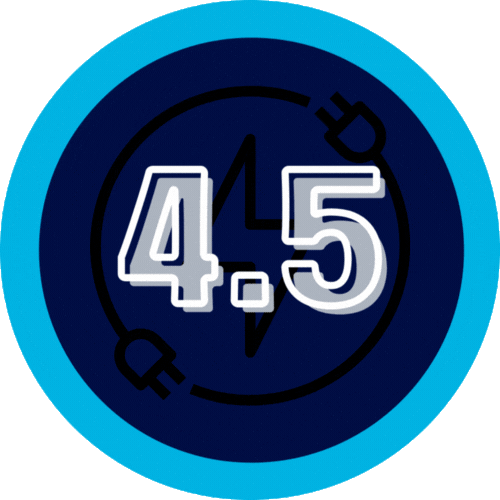
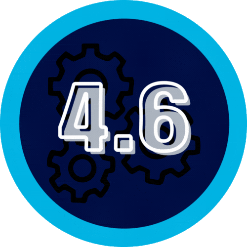

MATLAMAT
Pembelajaran & latihan dilaksanakan bagi memastikan kebolehan Team Member meningkat dalam pemeriksaan.
- Boleh membuat penilaian
- Merangka tindakan pembetulan
- Memberi pembelajaran
- Berpengetahuan tentang mesin
LANGKAH-LANGKAH MELAKUKAN PEMERIKSAAN KESELURUHAN
Langkah 1
Penyediaan bahan pembelajaran
Langkah 2
Melaksanakan pembelajaran
Langkah 3
Melaksanakan pemeriksaan keseluruhan
Langkah 4
Mengambil tindakan terhadap masalah di dalam pemeriksaan keseluruhan
SASARAN
Boleh menentukan jumlah masa melakukan aktiviti
TPM.
5%~2% jumlah waktu berkerja sebulan
5%~2% jumlah waktu berkerja sebulan
1
2
Setiap kumpulan kecil boleh melakukan aktiviti
mengikut masa yang ditetapkan berpandukan standard checksheet di dalam Step 4.
Setiap kumpulan kecil berkebolehan membuat
penilaian sendiri setelah aktiviti dilakukan.
3
ALIRAN TPM

PROSEDUR PEMERIKSAAN KESELURUHAN
Pemilihan Subjek untuk Pemeriksaan Keseluruhan
Penyediaan Bahan Pembelajaran
Jadual Latihan/Kelas
Melakukan Pemeriksaan Keseluruhan
Penglibatan dari Pihak Maintenance
Semakan untuk Standard Checksheet
Membuat Checksheet
Penilaian Skill
Permakahan & Penilaian Sendiri
Melakukan permarkahan & penilaian (DIAGNOSIS) oleh Manager/HOD


Pelinciran

Bolt & Nut

Tekanan Angin (Pneumatik)

Tekanan Minyak

Eletrikal

Bahagian yang Bergerak